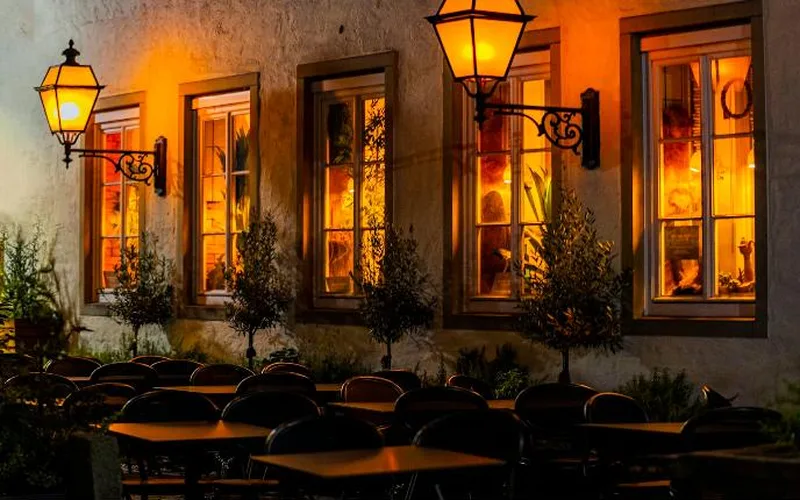
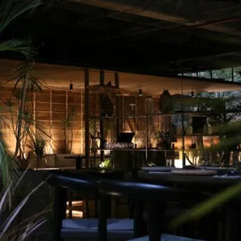

Desde hace 25 años servimos cenas lentas en una casona del centro histórico, con patio, velas y la carta que cambia con la pesca del día.

El patio · desde las 6 p. m.Cocinamos con leña, especias de la casa y productos de pescadores y huertas de Bolívar.
